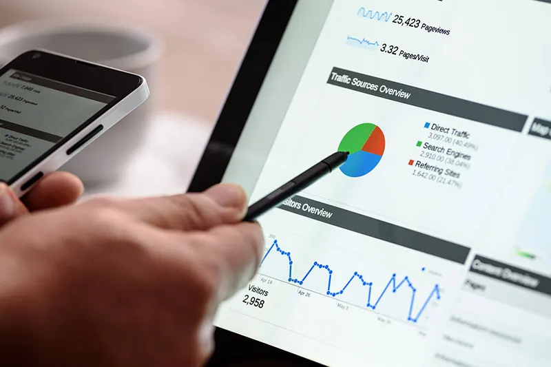

Tjänst 03
Projekteffekt
Första hjälpen i kritiska projekt – eller en förebyggande insats innan problemen vuxit sig stora.

Ibland kan det av olika anledningar uppstå akut svåra situationer i ett pågående projekt. En större risk kanske infaller och vänder allt på ända, en svårlöst konflikt blossar upp eller det har blivit uppenbart att projektet inte kommer att kunna leverera i tid med stora fördyringar som följd.
Att snabbt få ”första hjälpen” i ett projekt som hamnat i någon av de situationerna kan vara avgörande för att ett totalt haveri inte ska uppstå. Att få hjälpen kanske inte bara är en ren avlastning utan motverkar också risken för hemmablindhet.
Att göra denna typ av insatser är något som Projekteffektivitet älskar; vi kallar det projekteffekt. Ännu bättre tycker vi såklart att det är att göra det i förebyggande syfte – innan orosmolnen tornat upp sig på rad i horisonten.
Behöver ni få bättre effekt i era projekt?
Oavsett om ni vill utveckla projektorganisationen, driva ett viktigt projekt i mål eller få tillbaka framdriften börjar vi gärna med ett första samtal.